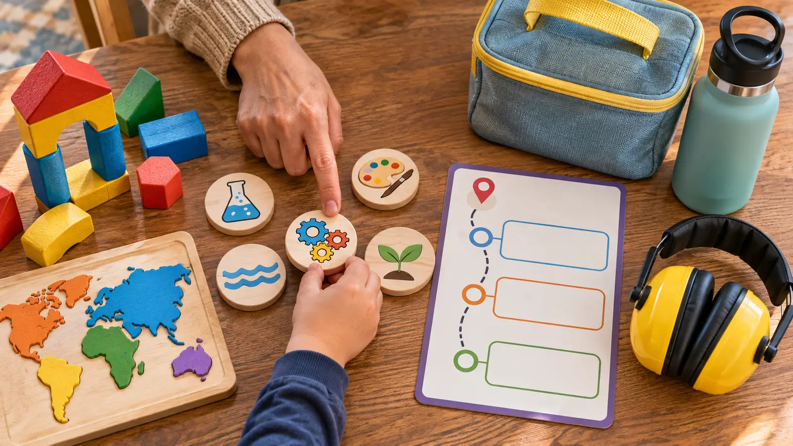

1. Build It Up
Start with the maker-and-builder gallery while patience is high. Give it 40–50 minutes. The mission is one shared build, one photo if permitted, and one clean handoff—not completing every station.
UTICA · INDOOR HALF DAY · AUTHORITY-EXPANSION
The new museum has six galleries and 60-plus exhibits. Your family does not need all of them. Pick three, protect lunch, and use The Cove before everybody is cooked.

Utica Children’s Museum reopened in its new home in 2025 with six galleries and more than 60 exhibits. That is plenty of fuel for a child who wants to touch everything and a parent who thinks the ticket must be “used up.” Do not try. For school-age kids, choose three galleries before the drive, build in food and a calm reset, and leave while the last activity is still working.
From Syracuse, allow roughly an hour each way as an editorial planning estimate, then check the live route and weather. Budget two and a half to three hours inside. The official site currently lists general admission at $15 for adults and children, free admission under age one, and Museums for All admission at $3 with ID and an EBT card. Those are volatile figures, not a promised checkout total. Verify eligibility, date, capacity, refund terms and any program charge before paying.
Use the live ticket or contact route to learn whether the chosen date has timed admission, walk-in capacity, special programming or a closure. Do not infer public-visit rules from field-trip pages. For a household considering membership, compare the real admission total for people who will actually attend with the current membership terms and likely visits. The family membership break-even method works even though this museum’s prices differ.
The museum participates in the Association of Children’s Museums reciprocal network according to its FAQ, but the member, card, participating museum and admission limits control. Verify both institutions before relying on a discount. Never buy a membership only because a calculator says the fourth visit is cheaper if the fourth visit will not happen.
The museum says Universal Design guided the new facility and describes varied seating, readable signage and circulation intended for a wide range of bodies and abilities. That is useful context, not proof that every exhibit, transfer, restroom, sound, light or queue will fit a specific visitor. Call ahead when step-free arrival, elevator access, wheelchair turning space, an adult aide, communication support, service-animal access, a quiet location or a fast exit decides the trip.
The Climber adds height, movement and competing sightlines. World Market and experiment stations can add shared materials, voices and waiting. Bring the child’s approved support without assuming the venue permits every device in every gallery. If hearing protection helps, use the family hearing-protection guide for fit, then confirm staff instructions remain audible. Never promise The Cove will be empty.
Leave toys, oversized bags and “just in case” clutter in the vehicle unless the museum requires or permits them. A hands-on museum already supplies the activity.
An indoor museum still requires a highway and parking lot. Check the National Weather Service forecast, road conditions and the museum’s messages. Lake-effect snow, ice or a power issue can cancel a paid plan. If driving is poor, stay home and use the 30-minute shadow lab or family board-game picker.
Low energy: one gallery, The Cove, snack and leave. Climber refusal: skip it; the ticket is not a contract with the stairs. Climber fixation: show the exit timer before entry, give one final run and follow through. Crowd overload: ask staff for the calmest current option; leave if regulation does not recover.
Skip the three-hour plan when the drive consumes the usable day, illness makes shared hands-on exhibits a bad idea, a required accommodation is not confirmed, the child needs a guaranteed quiet environment, or the family will feel forced to complete every gallery. A closer library or the MOST Syracuse plan can be the better call.
Verified November 3, 2026 against Utica Children’s Museum’s official Visit page, gallery descriptions, parking directions, new-museum overview, FAQ and Universal Design information. Prices and hours are labeled volatile; the official Wednesday-hour conflict is disclosed. The itinerary is independent editorial planning, not a first-person visit, access certification or venue endorsement.
MAKE THE WEEK COUNT
Build the plan your family can finish well, then leave enough energy for the next part of the day.
More family plans